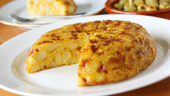

Spanish Omelette!

Directions
- Heat oil over medium-high heat in a large skillet. Add sliced the potatoes and the onion and season with salt; cook, stirring occasionally, until golden brown and crisp, 15 to 20 minutes.
- Whisk eggs in a bowl; season with salt. Pour the potatoes and onion after draining all the oil (leave some in the pan). Mix the ingredients softly and cook until eggs begin to brown on the bottom, 4 to 5 minutes.
- Keep wiggling the pan to avoid the omelette skicking. Invert a large plate over the pan, and carefully flip omelette out onto the plate. Slide omelette, uncooked-side down, back into the pan. Cook until eggs are set, 2 to 3 minutes.
- Serve warm, without any salsa, and side it with good bread.
Ingredients
- 8 eggs.
- 3 or 4 good sized potatoes.
- Half a sweet onion.
- Olive oil.
- Salt
- Some good bread and a glass of beer! :)